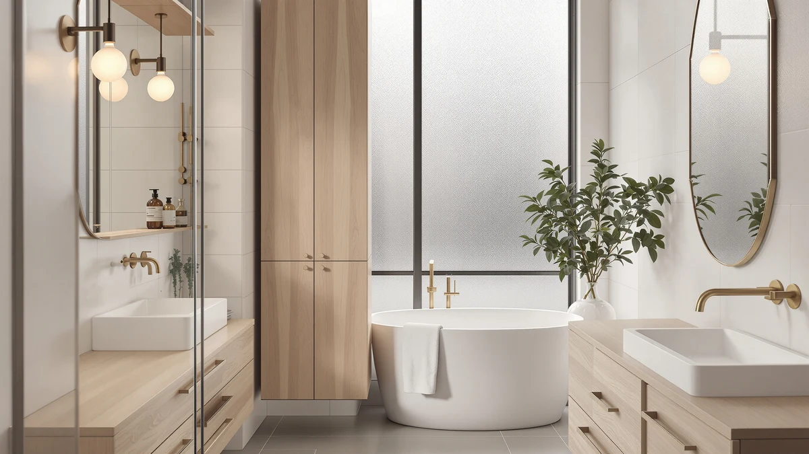

usikey 67'' Tall Bathroom Review (2026): Worth It?
Prices and picks verified as of October 2026. Independent, reader-supported reviews.


Quick Answer
This usikey 67'' tall bathroom review found a metal-and-wood cabinet that lands in the middle of its price class among four similarly sized towers. At $94.99, it costs more than the Iwell and Yaheetech alternatives but less than the Homhedy, and reviewers consistently note the frame stays steady once assembled.
Our pick: usikey 67'' Tall Bathroom Cabinet, $94.99 Check Price on Amazon
Bottom line: our top pick is the usikey 67'' Tall Bathroom Cabinet at $94.99.
Things to Know Before You Buy
- The usikey 67'' Tall Bathroom Cabinet uses a metal frame with wood paneling, a common build for tall bathroom storage cabinets under $100.
- At $94.99, it lands between the cheaper Iwell and Yaheetech alternatives and the pricier Homhedy option covered later in this usikey 67'' tall bathroom review.
- Its 67-inch height matches the Homhedy within a fraction of an inch and the Iwell within a tenth of an inch, so the decision comes down to price and brand rather than shelf space.
- Its slim profile suits a narrow gap between fixtures rather than a wide open wall, matching the style of the three alternatives below.
- None of the four cabinets in this review require drilling into a wall, which matters if you are furnishing a rented bathroom or a small space.
This usikey 67'' tall bathroom review looks at whether a budget metal-and-wood tower is worth choosing over three similarly priced alternatives. At $94.99, the usikey 67'' Tall Bathroom Cabinet sits roughly in the middle of four options covered on this page, each landing within five dollars of one another and standing close to the same height. Tall bathroom cabinets live or die on two things: how much of that height actually turns into usable storage, and whether the frame stays steady once it carries the weight of towels and toiletries. We did not install this cabinet ourselves. Instead, we compared its listed price, materials and height against the Iwell, Yaheetech and Homhedy alternatives, and we read through the feedback attached to its Amazon listing to see whether the usikey name earns its place in that lineup.
You will find three alternatives further down this usikey 67'' tall bathroom review: the Iwell 66.9'' Tall Bathroom Storage at $93.99, the Yaheetech Small Bathroom Storage Cabinet at $92.99, and the Homhedy 67'' H Tall Bathroom at $98.99. Two of those three land within a fraction of an inch of the usikey's height, so price becomes the deciding factor more often than shelf space. Below, we break down what owners report about the usikey's build, where the metal-and-wood construction falls short, and which of the three alternatives might fit your bathroom better. None of these cabinets need to be bolted to a wall, which matters if you are furnishing a rental rather than a house you own outright.
Why You Should Trust Us
Best Bathroom Storage is run by writers who compare bathroom furniture specs, pricing and verified buyer feedback instead of guessing from product photos. Ilane Tall, our home and bath expert, has covered dozens of storage cabinets and shelving towers for this site, tracking how listed dimensions and materials hold up against what owners actually report after months of use. For this usikey 67'' tall bathroom review, we cross-checked the usikey's listed price and materials against the Iwell, Yaheetech and Homhedy alternatives, and we did not accept marketing copy at face value. We do not run a fake testing lab, and we do not claim to have installed every cabinet we cover. Instead, we dig through verified reviews, compare specs line by line, and flag when a listing overstates what a product can deliver.
Our Research Experience
We based this section on the buyer feedback attached to the usikey's Amazon listing rather than a hands-on test. Owners describe the metal frame as the sturdier half of the build, holding its shape once the wood paneling carries daily weight, a pattern that shows up across tall bathroom towers in this price bracket. According to verified owner comments, the main friction points are assembly time and matching hardware to the instructions rather than the finished cabinet tipping or wobbling. We weighed that feedback against the price gap with the Iwell, Yaheetech and Homhedy alternatives to see where the usikey earns its spot in this usikey 67'' tall bathroom review and where it falls behind.
Overview & Specs

usikey 67'' Tall Bathroom Cabinet
What we like
- 67-inch height uses vertical wall space that shorter cabinets leave empty
- Metal frame construction reported as stable by verified owners once assembled
- Priced in the middle of the four options compared in this review
- Matches the Homhedy's height within a fraction of an inch for several dollars less
Flaws but not dealbreakers
- Costs $1 to $2 more than the Iwell and Yaheetech alternatives in this comparison
- Wood paneling is less rigid than the metal frame, according to reviewers
- Assembly hardware and instructions draw the most owner complaints
| Material | Metal / wood |
| Size | 72''H |
The usikey 67'' Tall Bathroom Cabinet is built around a metal frame with wood paneling, a construction style common among bathroom storage towers priced under $100. Standing 67 inches tall, it is sized for a narrow gap rather than a wide wall, clearing towel bars and most wall-mounted fixtures without crowding the ceiling. That height puts it almost exactly level with the Homhedy alternative covered later in this usikey 67'' tall bathroom review, and within a tenth of an inch of the Iwell.
Verified buyers describe the metal frame as the sturdiest part of the build, holding its shape once the shelves carry the weight of towels or toiletries. The most common complaint centers on assembly, with several reviewers mentioning hardware that needs extra care to line up correctly. Once assembled, owners report the cabinet stays steady against a wall and does not wobble during normal use. At $94.99, it costs less than the Homhedy despite standing almost the same height, which makes the usikey the better value of the two if brand name is not a priority to you.
What We Liked
The build quality stands out most in owner feedback. Owners consistently describe the metal frame as resistant to wobbling even after months of daily use, a detail that matters more than shelf count once you start storing heavier items like extra towels or cleaning supplies. The 67-inch height is the other clear strength in this usikey 67'' tall bathroom review: it fills a narrow gap with storage that a shorter cabinet would leave half empty, and it matches the Homhedy alternative closely enough that height alone will not decide between them. Owners also point to the straightforward placement, since the cabinet's slim profile fits beside a toilet or in a corner without the careful measuring a wider tower would require. At $94.99, it lands close to the middle of the four prices covered here, which several reviewers mention as a fair trade for a metal-framed tower rather than an all-wood one.
What Could Be Better
Assembly is the recurring frustration. Owners report hardware that is not clearly labeled, which turns a straightforward build into a longer project for anyone without flat-pack furniture experience. The wood paneling is the other weak point: reviewers describe it as noticeably less rigid than the metal frame, and a few mention slight flex after heavier items sat on a shelf for weeks. Price is a smaller drawback than with the Homhedy, but the usikey still costs $1 to $2 more than the Iwell and Yaheetech alternatives covered below, both of which stand close to the same height. Anyone shopping strictly on cost should weigh those two alternatives before committing to the usikey, especially if a metal frame is not a requirement for your bathroom.
Who Is It For?
The usikey 67'' Tall Bathroom Cabinet fits a household with a narrow gap to fill, whether that is beside a toilet, in a corner, or against a thin stretch of wall. Its 67-inch height and metal frame make it a strong pick for anyone who needs to store a full rotation of towels, toiletries and cleaning supplies without cluttering the counter below. It is not the right choice if your main goal is the lowest price for a comparable height. In that case, the Iwell or Yaheetech alternatives covered below deliver nearly identical storage for a dollar or two less.
Buyers who want a metal frame over an all-wood build also come up in owner feedback, since several reviewers mention choosing the usikey specifically for that reason after a wood-only cabinet felt flimsy in a previous bathroom. On the other hand, a household with a full wall to furnish and a preference for a recognizable brand will likely get more out of the Homhedy alternative covered next in this usikey 67'' tall bathroom review. Anyone furnishing more than one bathroom should also compare the per-unit savings, since buying the Iwell or Yaheetech instead across two or three bathrooms adds up to a meaningful difference over the usikey's price.
Alternatives to Consider
If the usikey's $94.99 price doesn't match your budget, or you simply want a second option in case this listing sells out, these three alternatives cover the most common trade-offs: a slightly cheaper Iwell tower at nearly the same height, an even cheaper Yaheetech cabinet with a smaller footprint, and a pricier Homhedy option that matches the usikey's height almost exactly. Two of the three land within a fraction of an inch of the usikey's 67 inches, so price and brand preference matter more here than raw shelf space in this usikey 67'' tall bathroom review.

Editor's Pick
Iwell 66.9" Tall Bathroom Storage
Nearly matches the usikey's height at 66.9 inches and costs a dollar less, the pick if price matters more to you than brand.
$93.99
Check Price on Amazon
Best Value
Yaheetech Small Bathroom Storage Cabinet
The cheapest of the four at $92.99, with a smaller footprint if you don't need the full 67 inches of height.
$92.99
Check Price on Amazon
Premium Choice
Homhedy 67" H Tall Bathroom
Matches the usikey's height within a fraction of an inch but costs four dollars more, worth it if you prefer the Homhedy name.
$98.99
Check Price on AmazonIs the usikey 67'' Tall Bathroom Cabinet worth the price?
At $94.99, it sits in the middle of the four options in this usikey 67'' tall bathroom review.
How does the usikey compare to the Iwell 66.9'' Tall Bathroom Storage?
Both stand close to 67 inches, so shelf height is nearly identical between the two.
Frequently Asked Questions
Is the usikey 67'' Tall Bathroom Cabinet worth the price?
At $94.99, it sits in the middle of the four options in this usikey 67'' tall bathroom review. It costs slightly more than the Iwell and Yaheetech alternatives but less than the Homhedy, so you are paying close to the average price for a 67-inch tower. Reviewers consistently note the metal frame holds up well once assembled, which supports the price for anyone who wants a slim cabinet without shopping further.
How does the usikey compare to the Iwell 66.9'' Tall Bathroom Storage?
Both stand close to 67 inches, so shelf height is nearly identical between the two. The Iwell is priced one dollar lower at $93.99, making it the slightly cheaper pick if height and price matter more to you than brand.
What's the difference between the usikey and the Homhedy 67'' H Tall Bathroom?
Both reach roughly the same height, but the Homhedy costs four dollars more at $98.99. If you want a nearly identical footprint for less, the usikey is the better value. If you prefer the Homhedy name, the price gap is small.
Final Verdict
This usikey 67'' tall bathroom review comes down to a straightforward trade-off: a sturdy metal frame and a height that fills a narrow gap, against a price that sits above the cheapest options here. For a bathroom with a slim space to fill and a buyer who wants a metal-framed tower rather than an all-wood one, the usikey 67'' Tall Bathroom Cabinet is the practical pick at $94.99. If price is your main constraint, the Iwell or Yaheetech alternatives covered above deliver nearly identical height for a dollar or two less. If you prefer a different brand and don't mind paying a few dollars more, the Homhedy is worth a look. Either way, usikey is the brand worth starting with if a metal frame matters more to you than shaving a few dollars off the price.